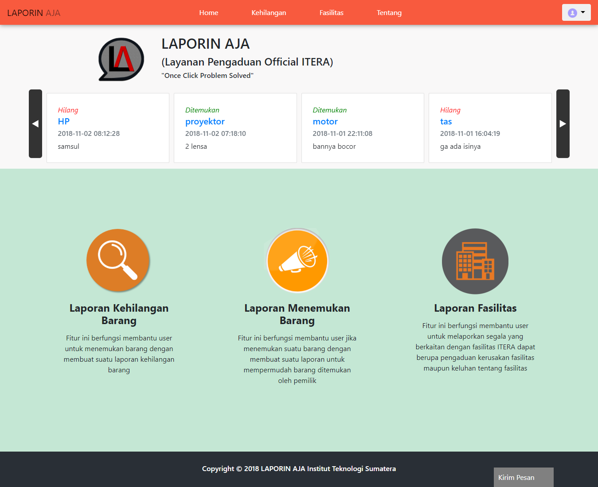

My Portfolio

Sistem Manajemen Dokumen ICOSITER
Web-based system which is useful for managing ICOSITER documents in the form of journals.
D'Hasanah Booking
Web-based system which is useful for recording customers who want to order housing units at D'Hasanah.

Laporin Aja
Web-based system which is useful for response services regarding loss information and damage reports to facilities on the ITERA (Institut Teknologi Sumatera) campus.
Astronaut The Cleaner
Windows game built on Unity with the theme of Global Warming.

Automatic Trash Bin Prototype
Internet of Things-based system that connect to trash bin, Android application and web server.